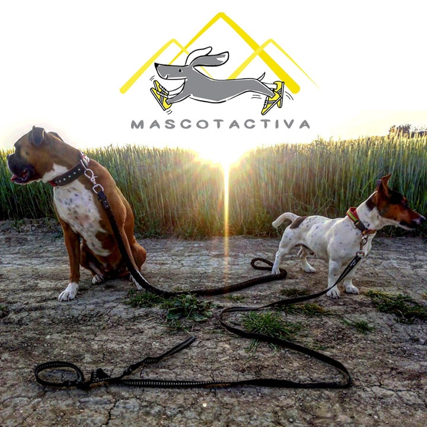
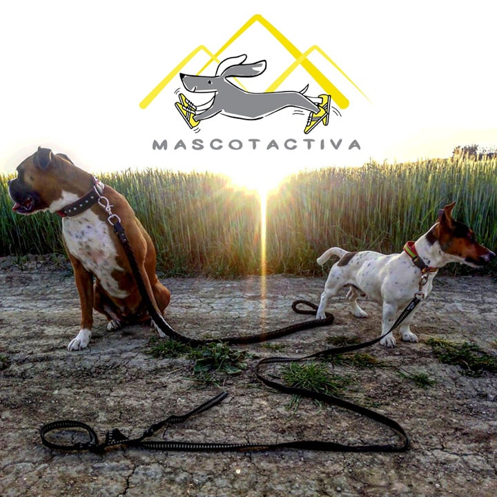

La peluquería canina ...
... No es solo una cuestión de estética, sino también de higiene, salud, y lo más importante, bienestar del animal porque sabemos lo importante que es para ti tu perro y lo mimaremos como se merece, con los mejores métodos y técnicas no invasivas garantizando un resultado final impecable y sin molestias para él. ¡Se merecen un trato especial!
Nuestros servicios de peluquería canina


Autolavado al mejor precio
Bañas tú mismo a tu mascota evitándote las molestias derivadas de este proceso en tu hogar como la limpieza posterior, los pelos en suspensión, los olores pero con los mejores productos, sin dejarte la espalda gracias a nuestra bañera hidráulica, disponiendo de toallas y explusadores (secadores de alta potencia)... Además te asesoramos durante el proceso para tener un perro sano y feliz.
Descubre más sobre el AutolavadoPienso y alimentos caninos
Sabemos muy bien que la alimentación de nuestro perro es la base de su bienestar y su comportamiento. Por ello, en la peluquería canina Canessa no hemos dudado a la hora de decidir qué productos vamos a vender y con qué marcas queremos trabajar.
Ver piensos y otros alimentos
Complementos para los peludos
Hay razas que requieren un mayor mantenimiento que otras pero todas necesitan baño para estar limpios y aseados además de cepillado para retirar pelo muerto y evitar los nudos. En la peluquería canina Canessa te ofrecemos amplia variedad de productos para estas tareas.
Ver todos los productosPaseamos y entrenamos a tu mascota
Servicio exclusivo de: guardería canina, paseos relajantes, entrenamiento físico, adiestramiento y gestión emocional por Rafa Cros, nuestro especialista en psicología y entrenamiento canino.
Saber más sobre Mascotactiva 
Vanessa Vizcaya: Canessa
Tras 12 años de experiencia y formación continuada, Canessa asume la dirección y gerencia de su propio salón de peluquería canina en la localidad madrileña de Valdemoro para poder seguir desarrollándose en su pasión por la belleza animal...
Saber más sobre mi